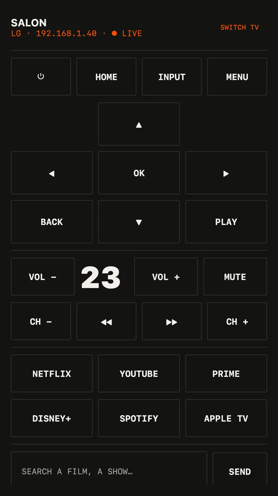

Guide · Samsung · LG · Google TV
Lost the TV remote? Your phone is one.
It's in the couch. The dog has it. The batteries are dead. Your phone is already on the Wi‑Fi — it can drive the TV by itself, no computer needed.


Which TVs
| TV | Pair once |
|---|---|
| Samsung smart TVs (Tizen) | Choose Allow on the TV |
| LG smart TVs (webOS) | Accept the prompt on the TV |
| Google TV / Android TV — Sony, TCL, Philips, Hisense… | Type the 6‑character code shown on the TV |
The TV is remembered after that. No IR blaster, no account, no cloud: the phone talks to the TV over your Wi‑Fi, like the TV maker's own app.
Set it up
- Turn the TV on, and put the phone on the same Wi‑Fi.
- Open MouseOS → TV. It lists the TVs on the network.
- Pick yours and pair once (above). That's it.
What it does
- Arrows and OK, Back, Home — the everyday remote.
- Volume and mute; LG and Google TV show their volume live on the phone.
- Power: once linked, MouseOS can wake the TV over the network.
- And when a laptop is plugged into the TV, switch to Pad or Remote to drive the computer itself — next episode, play, the computer's volume.